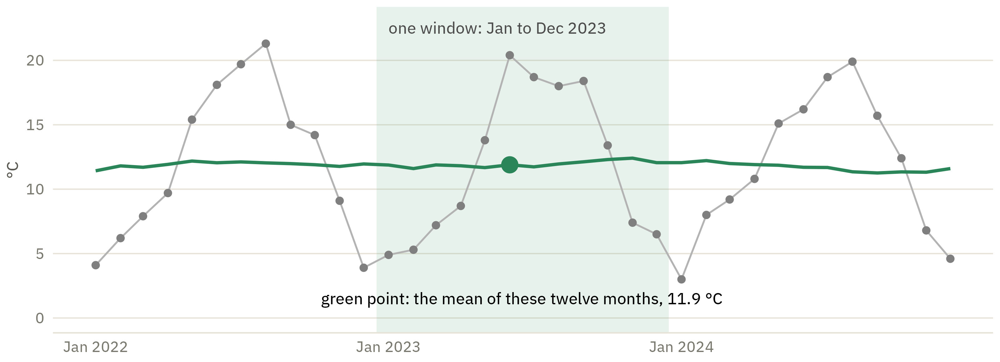

knmi <- read_csv("data/knmi-stations-monthly.csv")
glimpse(knmi)Dates, lines and trends
Week 5 · Work group
04 ENCODING Thursday 13:30 · 105 min
Last week had two continuous variables. This week one of them is time, and time has an order, so a line is allowed. Tuesday’s lecture named four settings of any chart with time on it: what counts as normal, where it starts and ends, how much is smoothed away, and how the box is shaped. It also drew a trend as a model. Today you do both on the Dutch temperature record you met in week 1, now ten stations long, and you end on a chart you know from Tuesday: the warming stripes.
As every week, the session has two parts. Part I you work through with the teacher, with three exercises along the way; nothing from it is handed in. Part II is a chart of your own and its misleading twin: portfolio entry 4, and the only thing you hand in.
Schedule
| min | |||
|---|---|---|---|
| 13:30 | Meet the data | 5 | Ten Dutch weather stations, one row per station and month |
| 13:35 | Part I · together | 50 | How much warmer have Maastricht’s summers become? A chart that lies, a date axis, a rolling mean, one row per summer, a normal and the warming stripes, then the trend as a model and as a coefficient plot. Exercises 1 to 3 |
| 14:25 | Part II · Draw it | 10 | Pairs, paper, felt pen. Your chart, for the claim it should support |
| 14:35 | Part II · Build it | 40 | Start on your own, from your sketch. The rest of the build and the twin are for home |
0 · Setup
Unzip it into your dsvar folder and double-click dsvar-week-05.Rproj. In the folder:
week-05-part1.qmd |
Part I, with the teacher. The example’s code, ready to run, and an empty chunk for each exercise. Not handed in |
week-05-part2.qmd |
Part II, on your own. Empty chunks for your chart and its twin. This is what you hand in |
theme-dsvar.R |
The course theme |
data/ |
Today’s dataset |
Today uses two packages by name, zoo::rollmean() and broom::tidy(). You installed broom last week. If R says there is no package called zoo, run install.packages("zoo") in the console once.
Part I · Together
Open week-05-part1.qmd. The teacher runs each chunk on the screen, and you run it on yours. Each exercise has its own empty chunk in that file, under the same step as on this page: write your code there and run it. No AI in Part I, code completion included: this is where you learn the code you will later judge a tool’s output against.
1 · Meet the data
Rows: 11,745
Columns: 6
$ station <chr> "De Kooy", "De Kooy", "De Kooy", "De Kooy", "De Kooy", "De Koo…
$ stn <dbl> 235, 235, 235, 235, 235, 235, 235, 235, 235, 235, 235, 235, 23…
$ date <date> 1906-01-01, 1906-02-01, 1906-03-01, 1906-04-01, 1906-05-01, 1…
$ year <dbl> 1906, 1906, 1906, 1906, 1906, 1906, 1906, 1906, 1906, 1906, 19…
$ month <dbl> 1, 2, 3, 4, 5, 6, 7, 8, 9, 10, 11, 12, 1, 2, 3, 4, 5, 6, 7, 8,…
$ tg <dbl> 4.0, 2.9, 3.8, 6.8, 11.0, 12.9, 16.2, 17.0, 15.1, 12.3, 8.7, 2…In week 1 you turned De Bilt’s twelve month columns into one month column. This week the dataset arrives in that shape, for ten stations.
| Column | What it is |
|---|---|
station, stn |
The station’s name and its KNMI number |
date |
The first day of the month, as a date |
year, month |
The same date, taken apart into two numbers |
tg |
The month’s mean temperature in °C. A thermometer 1.5 m above the grass is read through the day, the readings are averaged into a daily mean, and the daily means into one number for the month |
One row is one station in one month. KNMI, the Royal Netherlands Meteorological Institute, runs the stations. De Bilt’s record starts in 1901, the others between 1906 and 1957, and the dataset ends in August 2026.
Source, for every caption: KNMI.
The example in Part I is about one station:
maastricht <- knmi |>
filter(station == "Maastricht")2 · A chart that runs and lies
The question for Part I: how much warmer have Maastricht’s summers become? This first try is the chart you drew in week 1, year along the bottom and the temperature up the side. It runs without an error. It lies twice. Find both.
ggplot(maastricht, aes(year, tg)) +
geom_line()3 · A date on the x axis
The date column knows where each month belongs. read_csv() recognised it as a date because it is written year-month-day, and lubridate takes it apart:
d <- maastricht$date[1:3]
d
year(d)
month(d, label = TRUE) # the month as an ordered category, Jan to DecPut date on the x axis and the months spread out along the calendar. The last few years are enough to see it. scale_x_date() is the scale of a date axis: breaks takes the dates to label, counted out by seq(), and date_labels says how to write them (%Y is the year, %b the month’s short name).
maastricht |>
filter(year >= 2020) |>
ggplot(aes(date, tg)) +
geom_line() +
scale_x_date(breaks = seq(as.Date("2020-01-01"), as.Date("2026-01-01"), by = "1 year"),
date_labels = "%b %Y")One wave a year. The first lie is gone, and the seasons are still all you see.
4 · How much is smoothed away: a rolling mean
A rolling mean replaces each month by the average of itself and its neighbours. With a window of twelve months, every average holds one January, one February and so on, and the seasons cancel out. The picture shows one window: the green point is the mean of the twelve months of 2023.

Slide the window along by one month and compute again, for every month: that is the green line. rollmean() from the zoo package does it. fill = NA keeps one row per month, with NA where the window does not fit.
maastricht |>
mutate(smooth = zoo::rollmean(tg, 12, fill = NA)) |>
ggplot(aes(date)) +
geom_line(aes(y = tg), colour = "grey75", linewidth = .3) + # every month
geom_line(aes(y = smooth), colour = dsvar_accent(), linewidth = .8) + # the 12-month mean
labs(x = NULL, y = "°C")Now the warming shows: the green line climbs from about 9 °C to about 12. The months stay in grey, so a reader sees what was smoothed away. R warns that it removed 11 rows: the first five months and the last six have no full window around them. Twelve months is the one width that removes the seasons and nothing else. A wider window removes more.
EXERCISE 1
Compare three stations over ten years at a time. Keep Maastricht, De Bilt and Eelde with filter(station %in% c(...)), compute a rolling mean of 120 months, and draw one coloured line per station (colour = station), without the grey months. Put group_by(station) before mutate(), so that a window never runs from one station’s last months into the next station’s first. Have the three warmed by the same amount? And in which year do the lines end, and why there?
# your code here5 · One row per summer
A question about summers needs one number per summer. filter() keeps June, July and August, group_by(station, year) makes one group per station and summer, and summarise() turns each group into one row. Ask for the count as well: a mean of one month is not a summer.
summers <- knmi |>
filter(month %in% 6:8) |> # June, July, August
group_by(station, year) |>
summarise(tg = mean(tg), months = n(), .groups = "drop")
summers |>
filter(months < 3)Two summers are incomplete. Vlissingen’s record has a hole from October 1944 to July 1945, so its summer of 1945 is August alone, and Eindhoven has no June in 1952. Keep the full summers, and then Maastricht’s:
summers <- summers |>
filter(months == 3)
maastricht_summers <- summers |>
filter(station == "Maastricht")One row is one summer now, 121 of them, so year is the right x axis again.
6 · What counts as normal: the warming stripes
Warmer needs than what. Tuesday’s first setting is what counts as normal: the years whose average is called zero. Weather services take thirty years. Start with 1961 to 1990, as the warming stripes do.
normal <- maastricht_summers |>
filter(year >= 1961, year <= 1990) |>
summarise(normal = mean(tg)) |>
pull(normal) # pull() takes the column out of the table: one number
normal
maastricht_summers <- maastricht_summers |>
mutate(anomaly = tg - normal)A normal summer at Maastricht was 16.5 °C. The anomaly is each summer’s difference from that. It is still in °C, and 0 now means as usual. With it, the question has a number:
maastricht_summers |>
filter(year >= 2017) |>
summarise(anomaly = mean(anomaly), summers = n())The last ten summers were 2.7 °C warmer than a normal summer of 1961–1990.
Now the chart from Tuesday. Ed Hawkins’s warming stripes draw every year as one bar of the same height and put the anomaly into the colour. scale_fill_gradient2() runs from blue through white to red, and midpoint says which value is white. Compare it with the gallery’s version.
ggplot(maastricht_summers, aes(year, 1, fill = anomaly)) +
geom_col(width = 1) +
scale_fill_gradient2(low = "#08306B", mid = "white", high = "#67000D", midpoint = 0) +
theme_void() +
theme(legend.position = "none") +
labs(title = "Maastricht's summers, 1906 to 2026. Red: warmer than 1961–1990")68 of the 121 summers are red. The stripes have no axis and no numbers, on purpose. They cannot show how much warmer, or how sure anyone is.
EXERCISE 2
Move the normal to 1991–2020, the thirty years weather services use today. Compute the new normal, make the anomaly again in a new column, and draw the stripes with it. How many summers are red now (sum(x > 0) counts the values of x above zero)? How much warmer than normal are the last ten summers now? Did the summers change?
# your code here7 · The trend, and where it starts
The stripes show that summers got warmer. How fast? First let the data draw its own curve, as last week. span is how much is smoothed away, for a loess: span = 0.5 fits each point from the nearest half of the summers. Write it down, in the code and later in the caption.
ggplot(maastricht_summers, aes(year, tg)) +
geom_line(colour = "grey60") +
geom_smooth(method = "loess", formula = y ~ x, span = 0.5, se = FALSE) +
labs(x = NULL, y = "°C, mean of June to August")The curve rises a little until the 1940s, sinks back, and climbs steadily from the 1970s. Try span = 0.2 and span = 1 and watch what the curve keeps.
A straight line gives the speed as one number. Fit the model first. As on Tuesday, count time from the start, here in decades, so that the slope is in °C per ten years and the intercept is the line’s value in the first year:
since_1957 <- maastricht_summers |>
filter(year >= 1957) |>
mutate(decades = (year - 1957) / 10)
fit <- lm(tg ~ decades, data = since_1957)
coef(fit)
confint(fit)- Slope, 0.44: since 1957 Maastricht’s summers have warmed by 0.44 °C a decade, with a 95% interval from 0.34 to 0.55.
- Intercept, 15.9: the line’s value in 1957, in °C.
Why 1957? It is the first year that all ten stations have, and step 8 compares them. That is a reason, and it is still a choice: Tuesday’s second setting, where it starts and ends. The same code with another first and last year gives another slope. Start in 1906 and it is 0.25 °C a decade, not much more than half, because the slow first half of the record is in the line. Both numbers are right, and neither means anything without its years.
The finished chart keeps the whole record in grey and draws the line only over the years it was fitted to, so the reader sees the window inside the record:
ggplot(maastricht_summers, aes(year, tg)) +
geom_line(colour = "grey60") +
geom_smooth(data = since_1957, method = "lm", formula = y ~ x) + # this layer: 1957 onwards only
labs(title = "Since 1957, Maastricht's summers have warmed by 0.44 °C a decade",
subtitle = "Mean temperature of June, July and August, with a straight line fitted from 1957",
caption = "n = 70 summers in the line, 1957 to 2026 · record from 1906 in grey · line: lm(tg ~ decades), 95% interval 0.34 to 0.55 °C a decade\nband: 95% interval for the line · KNMI",
x = NULL, y = "°C")The fourth setting, how the box is shaped, is the chunk option #| fig-height:. Try 2 and 6 and look at how steep the same line seems.
8 · One trend per station: a coefficient plot
Is Maastricht special? Fit the same model for every station, as you did for every year last week: group_by(), then reframe() with broom::tidy(). Keep the row of the slope.
trends <- summers |>
filter(year >= 1957) |>
mutate(decades = (year - 1957) / 10) |>
group_by(station) |>
reframe(broom::tidy(lm(tg ~ decades), conf.int = TRUE)) |> # one model per station
filter(term == "decades")
trendsOne row is one station. Draw the rows as last week’s coefficient plot.
ggplot(trends, aes(estimate, fct_reorder(station, estimate))) +
geom_vline(xintercept = 0, linetype = "dashed", colour = "grey50") +
geom_pointrange(aes(xmin = conf.low, xmax = conf.high)) +
labs(title = "Summers have warmed at all ten stations, at about the same speed",
subtitle = "Change in summer mean temperature per decade, 1957 to 2026, with 95% intervals",
caption = "n = 70 summers per station · one lm(tg ~ decades) per station · KNMI",
x = "°C per decade", y = NULL)Every station lies far to the right of the dashed line: summers warmed everywhere. Maastricht has the largest estimate, 0.44, and Leeuwarden the smallest, 0.31, but their intervals overlap. This chart is no evidence that one station warmed faster than another.
EXERCISE 3
Have all twelve months warmed, or only the summer? Start from maastricht, the monthly rows, and keep 1957 to 2025. Make decades as in step 7, replace month by its name with month(date, label = TRUE), and fit one model per month. Draw the twelve slopes as a coefficient plot with the months along the bottom (ymin and ymax for the interval). Which months have the widest intervals, and why those?
# your code hereEverything you need for Part II is now on your screen.
Part II · On your own: portfolio entry 4
What you hand in · portfolio entry 4 · due Sunday
Your sketch, your chart and its misleading twin, in week-05-part2.qmd. The file has the data loaded and empty chunks for the rest. Part I is your model; the reference sheet has the syntax on other data.
The claim your chart should support
De Bilt’s warming has accelerated.
And the twin you will build from the same dataset:
De Bilt’s warming paused.
Both sentences are about the same station and the same 125 years: De Bilt’s record starts in 1901. They are about whole years, not summers. The twin differs from your chart in one setting only: where it starts and ends.
9 · Draw it
ON PAPER · IN PAIRS · 10 MIN
De Bilt’s warming has accelerated.
Draw the chart that supports the first claim, with a felt pen. No laptop.
- What is one point on your chart: a month, a summer or a year?
- Which years are on it, and why does it start where it starts?
- Accelerated compares two speeds. How does your chart show both: one curve, two lines, or two points with intervals?
- What will the caption say about the line and its band?
The teacher reads the sketches before anyone opens RStudio. Keep yours and photograph it: the sketch is part of what you hand in.
10 · Build it
Build your sketch in the chunk The chart of week-05-part2.qmd: start in the room, finish at home. The dataset is loaded as knmi and the station is "De Bilt". Your chart needs one row per year, so the first job is step 5 again, for whole years: a mean for each year, and a count of the months behind it. The finished chart carries the claim as its title, and the n, the source, the years and what the line and its band are in its caption.
AI is allowed from here on: describe how you used it in the entry’s AI statement.
STUCK?
Find the step in Part I that did the same job: one row per period, with a count of its months (step 5), a curve and its span, or a straight line and its two numbers (step 7), one trend for each of several groups (step 8), the claim and the caption (step 7).
11 · Twist it
Same dataset, same station. In the chunk The misleading twin, build a chart that supports the second claim:
De Bilt’s warming paused.
Keep the chart as it is: De Bilt’s whole years, a line and its band. Change where it starts and ends. Step 7 showed that a line’s slope depends on its first and last year, so look for a stretch of ten to twenty years in which a straight line does not rise, and draw only those years. Try a few first years before you settle on one, and write in your entry how many you tried.
The rule: only choices you could defend in a paper. The data does not change and the line is a real model. This one is for home.
Hand it in
Next Tuesday’s lecture opens with a critique of some of the handed-in entries, shown as screenshots and without names.
What you hand in · portfolio entry 4 · due Sunday
week-05-part2.qmd, with these six things in it:
- Your sketch, photographed and saved in the week folder as
sketch.jpg. The file shows it automatically. If your phone saves.heic, export the photo as JPG first: browsers cannot show HEIC. - The chart for the first claim, with the claim as its title, and the years, the line and its band named in the caption.
- The misleading twin for the second claim, made only with choices you could defend.
- One sentence on the setting that did the work, where it starts and ends: which years you chose for the twin, and how many you tried.
- What the charts cannot tell you, in a sentence or two.
- Your AI statement, as the AI use page describes it.
Render the file, then upload week-05-part2.html to Canvas. Only that file: nothing from Part I, and not the whole folder. The HTML holds your code and your charts together, which is what the portfolio is built from.
Reference sheet
On economics, airquality and txhousing, built into R and the tidyverse, so they cannot be pasted into today’s build without being understood first. The forms are in the field guide: line chart, line with a smoother, several lines, warming stripes.
NoteDates
A date column that read_csv() recognised as a date plots correctly. When it did not, or when you need to build one:
make_date(year, month, 1) # a date from parts
dmy("02SEP1981") # a date from text: day, month, year
year(date) # parts from a date
month(date, label = TRUE)ggplot(economics, aes(date, unemploy)) +
geom_line() +
scale_x_date(breaks = seq(as.Date("1970-01-01"), as.Date("2010-01-01"), by = "10 years"),
date_labels = "%Y")
NoteOne row per period, and groups that keep their rows
summarise() after group_by() gives one row per group. mutate() after group_by() keeps every row and computes inside its group. Count the rows behind every mean.
economics |>
mutate(year = year(date)) |>
group_by(year) |>
summarise(unemploy = mean(unemploy), months = n()) |> # one row per year
filter(months < 12) # 1967 and 2015 are not full years
airquality |>
group_by(Month) |>
mutate(vs_month = Temp - mean(Temp)) |> # each day against its own month
ungroup() |>
select(Month, Day, Temp, vs_month) |>
head(3)
NoteTwo ways to smooth
A rolling mean is a window in rows: zoo::rollmean(x, k, fill = NA) loses about k / 2 values at each end. A loess is a window in share of the data: span = 0.3 uses the nearest 30% of the points for each fitted value. Both decide what counts as noise, so both go in the caption.
economics |>
mutate(roll = zoo::rollmean(psavert, 24, fill = NA)) |>
ggplot(aes(date, psavert)) +
geom_line(colour = "grey75", linewidth = .3) +
geom_line(aes(y = roll)) +
geom_smooth(method = "loess", formula = y ~ x, span = 0.3, se = FALSE, linetype = 2) +
labs(x = NULL, y = "%", caption = "solid: 24-month rolling mean · dashed: loess, span 0.3")
NoteA normal, an anomaly, and stripes
saving <- economics |>
mutate(year = year(date)) |>
group_by(year) |>
summarise(psavert = mean(psavert), months = n()) |>
filter(months == 12)
usual <- saving |>
filter(year >= 1970, year <= 1999) |> # the years that count as normal
summarise(usual = mean(psavert)) |>
pull(usual)
saving |>
mutate(anomaly = psavert - usual) |> # 0 now means: as in 1970–1999
ggplot(aes(year, 1, fill = anomaly)) +
geom_col(width = 1) +
scale_fill_gradient2(low = "#08306B", mid = "white", high = "#67000D", midpoint = 0) +
theme_void() +
theme(legend.position = "none")
NoteA trend as a model, and one per group
houston <- txhousing |>
filter(city == "Houston", month == 6) |>
mutate(decades = (year - 2000) / 10) # time counted from the first year, in decades
fit_h <- lm(median ~ decades, data = houston)
coef(fit_h) # intercept: the line's value in 2000. Slope: dollars per decade
confint(fit_h) # the 95% interval of bothtxhousing |>
filter(city %in% c("Houston", "Dallas", "Austin", "El Paso"), month == 6) |>
mutate(decades = (year - 2000) / 10) |>
group_by(city) |>
reframe(broom::tidy(lm(median ~ decades), conf.int = TRUE)) |> # one model per city
filter(term == "decades") |>
ggplot(aes(estimate, fct_reorder(city, estimate))) +
geom_vline(xintercept = 0, linetype = "dashed", colour = "grey50") +
geom_pointrange(aes(xmin = conf.low, xmax = conf.high)) +
labs(x = "median house price in June, dollars per decade", y = NULL)
NoteThe window
filter(year >= a, year <= b) is the window. A layer can have a window of its own: geom_smooth(data = filter(d, year >= a), method = "lm") fits the line to those rows and leaves the rest of the chart alone.